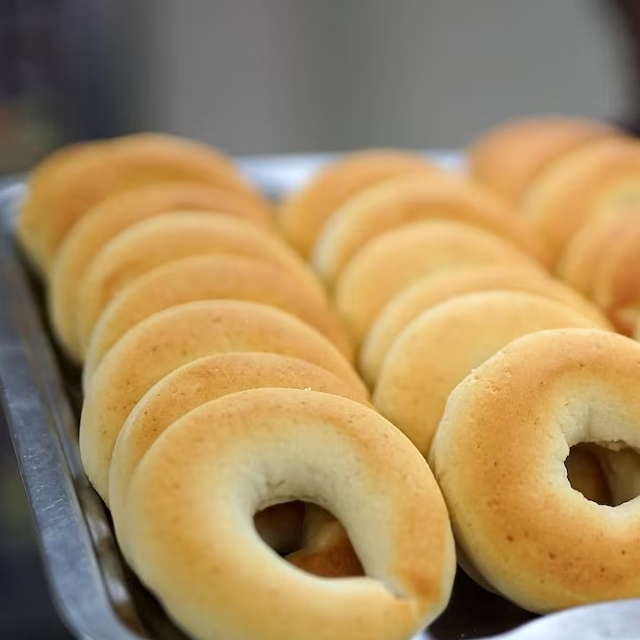
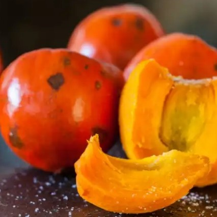
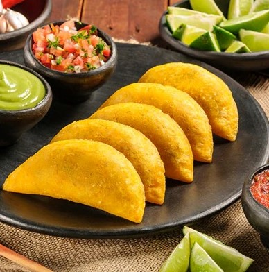

La gastronomía de Cali es un auténtico festín para los sentidos, caracterizada por una mezcla vibrante
de sabores y aromas que reflejan la rica herencia cultural de la región. En cada bocado se puede
experimentar una fusión única de ingredientes locales frescos, técnicas culinarias tradicionales y un toque
moderno que hace que la comida caleña sea inigualable y memorable para cualquier paladar.
Algunos platos de la ciudad de Cali son:
|  |
PANDEBONOEl pandebono es un amasijo de tradición gastronómica en Colombia. Una receta única y rápida que tiene como ingredientes el almidón de yuca, el maíz, huevos y queso para darle el mejor sabor al pan tradicional. El pandebono es originario del Valle del Cauca, Cali. La primera vez que se preparó fue en “La Hacienda El Bono”, una finca de la zona rural de Dagua, gracias a Genoveva, la cocinera de este lugar. Su idea fue darle un sabor extra al pan tradicional, llevando a su cocina el almidón de yuca, maíz, y queso para convertirlo en la merienda favorita de quienes trabajaban cerca al lugar. |
CHONTADURO (BACTRIS GASIPAES)El Chontaduro es una fruta de la familia de las arecáceas (de las palmeras). |
 |
|  |
EMPANADASLas empanadas son reconocidas por su masa de maíz crujiente y relleno de carne, que puede ser de res molida o desmechada; papa, cebolla y especias. Se caracterizan por su sabor distintivo y se acompañan con ají para un toque picante. Estas empanadas son un reflejo de la cultura gastronómica de la región y se encuentran fácilmente en puestos de comida callejera de la ciudad. Son una tradición arraigada en la cultura caleña, disfrutadas en reuniones familiares, celebraciones y como una merienda rápida y sabrosa a cualquier hora del día. |
Más sobre la comida tipica de Santiago de Cali:
Turismo gastronómico